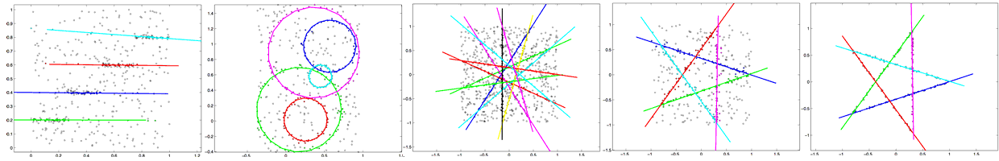
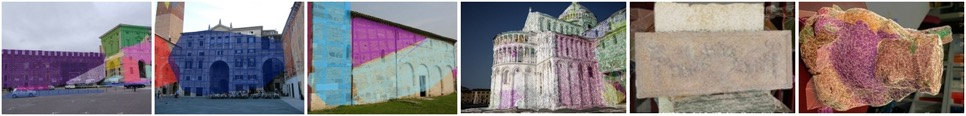
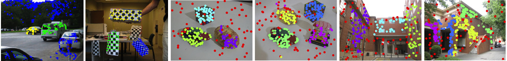

with R. Toldo and L. Magri

J-linkage [1] is a method for fitting multiple instances of a model to data corrupted by noise and outliers. RANSAC, for comparison, fits a single instance of a model to data corrupted by noise and outliers. The proposed solution is based on random sampling (as RANSAC) and conceptual data representation. Each point is represented with the characteristic function of its preference set, i.e., the set of models that fitthe point within a tolerance. Points belonging to the same model will have similar preference sets, in other words, they will cluster in the conceptual space. A tailored linkage clustering based on Jaccard distance is then qused to group points belonging to the same model. A real-time version of J-linkage have been proposed in [3] [Video].
In this work we improve the efficiency of J-Linkage with an efficient min-hash scheme that approximates the Jaccard distance and allows to tackle large dataset, such as laser scans of entire buildings (Scan2BIM).

In [4,5] we included image consistency constraints into J-linkage with the aim of fitting planar patches coresponding to actual surfaces instead of planes to 3D data. [Video 2010] [Video 2013]

In T-Linkage [2] the binary preference analysis implemented by J-linkage is replaced by a continuous (soft, or fuzzy) generalization, and the Tanimoto Jaccard distance takes the place of Jaccard. The benefits of working with continuous values rather than operating with hard thresholding is that we are allowed to integrate more specific information on residual for depicting points preferences (this parallels the difference between RANSAC and MSAC). Consequently the soft threshold parameter adopted by T-Linkage is a more educated guess compared to the J-Linkage hard inlier threshold. T-linkage also takes advantage of the more expressive representation of points both in term of misclassification error and robustness to outliers.
T-Linkage have been extended here to cope with multiple heterogeneous models (i.e., multiple istances of multiple classes of models).
Other methods for robust fitting of multiple models we proposed are RPA and RansaCov.